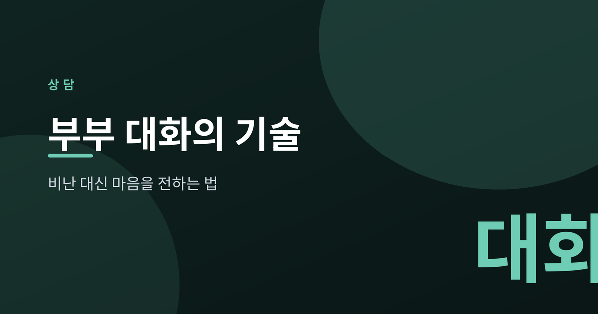
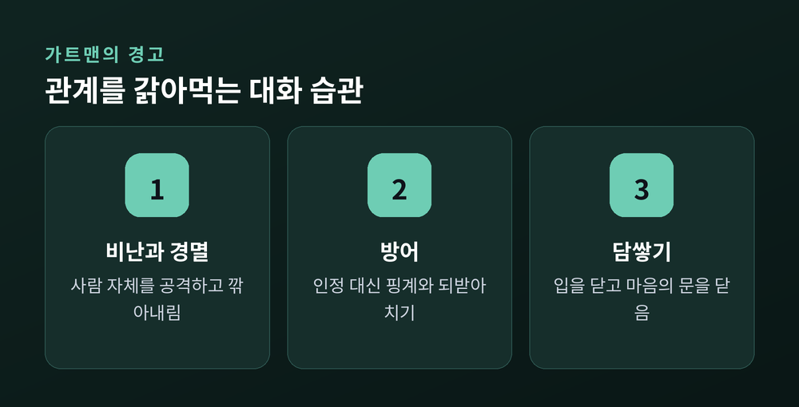
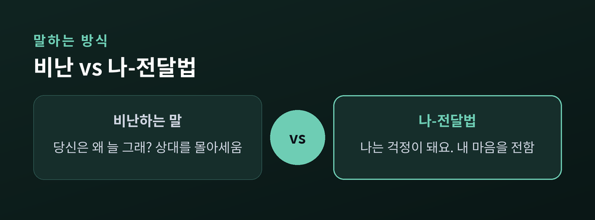
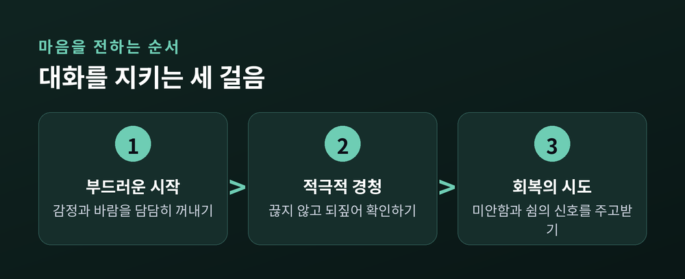

비난 대신 마음을 전하는 법

부부 사이의 갈등은 대개 문제 그 자체보다 말하는 방식에서 커집니다. 같은 이야기라도 어떻게 시작하고 어떻게 듣느냐에 따라 결과가 달라집니다. 이번 글에서는 심리학자 존 가트맨의 연구를 바탕으로, 비난을 줄이고 마음을 전하는 대화의 기술을 정리해 보겠습니다.
가트맨은 오랜 관찰을 통해 관계를 무너뜨리는 네 가지 대화 습관을 지목했습니다. 흔히 '네 가지 독'이라 불립니다.
첫째는 비난입니다. "당신은 왜 늘 그래?"처럼 행동이 아니라 사람 자체를 공격하는 말입니다. 둘째는 경멸입니다. 비웃음이나 조롱처럼 상대를 깎아내리는 태도로, 가트맨은 이것을 가장 위험한 신호로 보았습니다. 셋째는 방어입니다. 잘못을 인정하는 대신 핑계를 대거나 되받아치는 반응입니다. 넷째는 담쌓기입니다. 아예 입을 닫고 마음의 문을 걸어 잠그는 것을 말합니다.
이 네 가지는 서로 꼬리를 뭅니다. 비난이 경멸을 부르고, 경멸이 방어를 낳고, 방어가 결국 담쌓기로 이어집니다.

가트맨의 연구에서 인상적인 대목이 있습니다. 대화의 첫 3분이 15분 뒤의 결말을 상당 부분 예고한다는 것입니다.
거칠게 시작한 대화는 거칠게 끝나기 쉽습니다. 그래서 '부드러운 시작'이 중요합니다. 상대를 몰아세우는 말 대신, 지금 내가 느끼는 감정과 바라는 바를 담담히 꺼내는 방식입니다.
여기서 힘을 발휘하는 것이 나-전달법입니다. "당신은"으로 시작하면 화살이 상대를 향하지만, "나는"으로 시작하면 내 마음을 전하게 됩니다. "당신은 왜 연락도 없어?"를 "나는 연락이 없으면 걱정이 돼요"로 바꾸는 식입니다. 같은 불만이라도 상대의 방어를 덜 자극합니다.

말하기만큼 중요한 것이 듣기입니다. 적극적 경청은 상대의 말을 끊지 않고, 판단을 잠시 미루고, 들은 내용을 되짚어 확인하는 태도입니다. "그러니까 서운했다는 거지요?"라고 되물어 주는 것만으로도 상대는 이해받았다고 느낍니다.
여기서 조언이나 해결책을 서둘러 내밀 필요는 없습니다. 문제를 고치는 것보다 마음을 알아주는 일이 앞설 때가 많습니다.
다툼 중에도 관계를 지키는 장치가 있습니다. 가트맨이 말한 '회복의 시도'입니다. "미안해요, 말이 심했어요"라거나 "잠깐 숨 좀 돌리고 다시 이야기해요" 같은 작은 신호입니다. 중요한 것은 그 신호를 상대가 받아 주는 일입니다. 회복의 시도를 주고받는 부부일수록 갈등에서 더 잘 빠져나옵니다.

이런 방법이 만능은 아닙니다. 나-전달법도 진심이 없으면 공허한 화법에 그칩니다. 감정이 격해진 순간에는 배운 대로 말하기가 쉽지 않습니다.
그래도 방향은 분명합니다. 상대를 이기려는 대화에서 서로를 이해하려는 대화로 옮겨 가는 것입니다. 처음엔 어색해도 반복하면 조금씩 몸에 뱁니다.
다만 갈등이 자꾸 반복되거나 점점 깊어진다면, 두 사람만의 힘으로 버티기보다 부부상담 같은 전문가의 도움을 받아 보시길 권합니다. 도움을 청하는 것은 관계를 포기하는 일이 아니라 지키려는 노력입니다.
끝으로 한 마디만 더 드리겠습니다. 대화의 기술은 상대를 바꾸는 도구가 아니라, 내 마음을 정직하게 건네는 통로입니다.
"비난은 벽을 세우고, 마음을 전하는 말은 문을 엽니다."
오늘 저녁, 한 문장만 "나는"으로 바꿔 말해 보신다면 어떨까요.